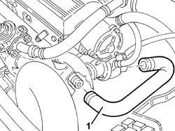

1088D23 sleeve from thermostat to rigid pipe carrying fluid to pump - r r
- Path
- Procedures > 10 ENGINE > 1088 ENGINE COOLING > 1088D coolant hoses and sleeves > 1088D23 sleeve from thermostat to rigid pipe carrying fluid to pump - r r
- Kind
- repair procedure (removal / refitting; the operation number is the code)
- Applies to
- engines: 1.9 JTD 8v , 2.4 JTD 10v; all production periods
- Interactive page
- https://sloeber94.github.io/elrnDB-a156/en/#/3237852
Applies to: engines: 1.9 JTD 8v , 2.4 JTD 10v; all production periods
 Removing
Removing
 Refitting
Refitting1. Disconnect and remove the hose from the thermostat to the pump rigid inlet pipe.

Applies to: engines: 1.9 JTD 8v , 2.4 JTD 10v; all production periods
Refitting
RemovingFit the hose from the thermostat to the rigid inlet pipe to the pump.
Applies to: engines: 1.9 JTD 8v ; all production periods
Top up the engine cooling system with coolant.
 | Type | Component | Name | Qty. |
|---|---|---|---|---|
- | Fluid | ENGINE COOLING CIRCUIT | Mixture 50% Paraflu11 for Alfa Romeo/distilled water | 6.1 |
Applies to: engines: 2.4 JTD 10v; all production periods
Top up the engine cooling system with coolant.
| Type | Component | Name | Qty. |
|---|---|---|---|---|
- | Fluid [l] | ENGINE COOLING CIRCUIT | Mixture 50% Paraflu11 for Alfa Romeo/distilled water | 6.8 |
Applies to: engines: 1.9 JTD 8v , 2.4 JTD 10v; all production periods